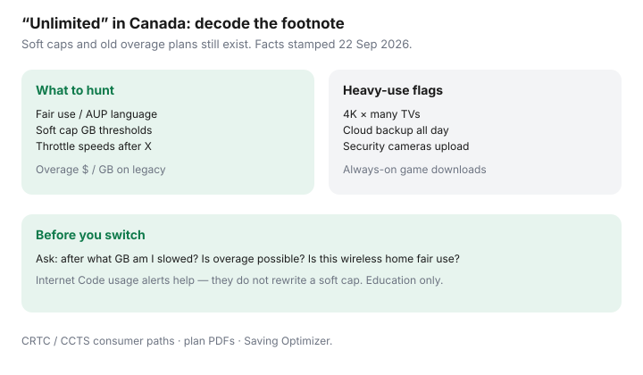

Internet · Canada
Unlimited Internet in Canada: Fair-Use Policies, Soft Caps, and Overage Traps
In Canada, “unlimited” is often a billboard word sitting on top of fair-use policies, soft caps, deprioritisation clauses, and — on older plans — leftover overage schedules. Households learn this when 4K, cloud backup, and cameras share a month. This is a fine-print decoder, not an accusation that every ISP is lying, and not a live plan catalogue.
Disclosure: No ISP partnership. Affiliate opportunity types only (ISP plan categories). We do not invent a national unlimited ranking. Education only — not a CCTS filing template.
Key takeaways
- Unlimited marketing can still allow throttles or deprioritisation after a soft threshold or during congestion.
- Hunt fair-use / AUP language in the plan PDF and critical information summary — not only the hero banner.
- Some legacy plans still bill overages; read your plan code, not your neighbour’s ad.
- Cameras, cloud backup, and multi-4K homes are the usual soft-cap surprise.
- Ask five written questions before you switch; keep Internet Code usage-alert expectations in mind (facts stamped 22 Sep 2026).
What “unlimited” often still throttles

- Network management: peak-hour slowing when the node or cell is busy.
- Priority tiers: after X GB you stay “unlimited” but behind other traffic.
- Wireless home internet: allotments that drop to a crawl (see 5G home vs fibre or cable).
- Video bit-rate shaping: less common on wireline than mobile, still worth scanning footnotes.
Find fair-use and soft-cap language in the fine print
Search the PDF for: fair use, acceptable use, unlimited, after, GB, priority, manage, congestion, throttle, speed reduced. Match that text to the critical information summary the Internet Code expects ISPs to provide. Screenshot the version dated on the day you order.
Overage fees on older plans still in force
| Symptom on the bill | What to check |
|---|---|
| Overage line items | Plan still has a hard cap; ask for migrate-to-unlimited pricing in writing |
| “Bonus data” credits | May mask a cap; credits expire |
| Usage alerts at 50/90% | Code-friendly alerts can exist even on unlimited — alerts ≠ no soft cap |
| Wireless gateway “home internet” | Different product; read allotment drop speeds carefully |
Heavy-use households: cameras, backups, 4K
Rough planning (not a lab claim): multi-4K streams, cloud photo backup, and always-on camera uploads stack faster than a couple of HD shows. If your month regularly crosses a soft-cap rumour you saw on a forum, measure actual usage in the ISP app for 30 days before you upgrade download speed alone — data policy and speed are different problems (speed worksheet).
Questions to ask before you switch
- After how many GB (if any) is traffic deprioritised or slowed, and to what speed?
- Is there any overage fee on this plan code?
- Is this wireline or wireless home internet?
- What usage alerts will I receive, and when?
- What is the after-promo monthly price with the same data policy?
A fine-print checklist for unlimited claims
- ☐ Billboard vs PDF language match
- ☐ Soft-cap / priority threshold noted
- ☐ Overage schedule confirmed absent or priced
- ☐ Wireless vs wireline identified
- ☐ 30-day usage estimate for your household pattern
- ☐ Promo end date calendared
- ☐ CCTS / ISP complaint path bookmarked if speeds collapse without explanation
Sources & date stamps
- CRTC Internet Code — contract information, usage notifications, complaints pathway context (facts stamped 22 Sep 2026).
- CCTS — consumer complaint process after the ISP’s process.
- Individual ISP plan PDFs and acceptable use policies — verify at order time; no national composite table claimed.
Frequently asked questions
Does unlimited mean I will never be slowed?
Not always. Many Canadian plans pair unlimited branding with fair-use, acceptable-use, or network-management language that allows deprioritisation or throttles after a soft threshold — especially on wireless home internet.
Where do I find the soft-cap language?
In the plan details PDF, critical information summary, acceptable use policy, and footnote under the big “Unlimited” badge. Search for “after,” “priority,” “managed,” and “GB.”
Can I still have overage fees?
Yes on some older or legacy-tier plans that never moved to unlimited. Confirm your current plan code on the bill before you celebrate a neighbour’s unlimited ad.
Do security cameras and cloud backups count?
Uploads count toward usage on capped or soft-capped plans. Always-on cameras and continuous backup are classic surprise heavy users.
What if my ISP throttles without a clear notice?
Use the Internet Code / contract summary path: document speeds, open a ticket with the ISP, then escalate to the CCTS if unresolved. This page is not legal advice.